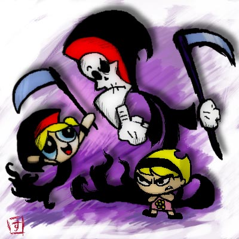
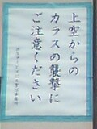
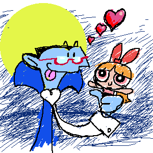

クルーゾー警部が出てないのは残念ですが（見逃してるだけかしらん？）、なにげにこの白いおっさんは好きなのです。
クルーゾー警部が出てないのは残念ですが（見逃してるだけかしらん？）、なにげにこの白いおっさんは好きなのです。(日記とか言うモノ)
アメリカCNサイトを覗いててきがついたんだが、いつのまにやら、Grim&Evilがなくなっている・・・・
そのかわりに、 Grim
Adventures of Billy and Mandyになってるよ〜！
これが、Grim&Evilの新シリーズってことか。えー、ヘクター様、消えちゃったんですか。
Grimのほうが人気高かったってことか。それにしても、なかったことになってるのはすごいな。ページの場所は同じなのに、完全に入れ替わってる。ていうかGrimだけになってる。
どっちでもいいけど、これもすでにけっこうエピソード溜まってるから、はやく日本でもやってくれないかねえ。いわゆるデクスター、パワパフ系の絵柄だし、きっと日本でもイケるよ。それにしても、ヘクターやボスコフの消息はそうなってしまったんだろうなあ。ねえ、暴いておくれよドルバッキー。
というわけで、それもあるが、思うとこあって絵の練習。もっと描かなくては。

マンディ怖くなってしまった・・・・
そーいや、やっぱりやるんだ。トータリースパイズ。
ここんとこ生活リズムがむちゃくちゃ。
もうじき6月も終わりか。もう夏。早いものだ。
にしても、日本のCNのwebサイト、まだ残ってるよ、パワパフ情報局。あれから3ヶ月もたつとうのに。近いうちっていったいいつなんですかね、ホント。
そんなこんなで、久々にいろいろ回ってみたり。
ジョイフル ここはほんとどうしようもないな。一応夏メニューだけは更新されたようだが、やっぱりパワパフ情報ないなあ。しかし、あいかわらずコーディングはなかなか。その分中身がショボイのが逆に目に付く。マンガで絵でもそうだけど、技術だけが高くても人は感動させられない。「何を」表現するか、そこがポイントだ。
一人部屋 ああ、閉鎖なんですね。ちょくちょく覗いていただけに残念。top絵が寂しい。
で、POWERPUFF
FACTORY さんが移転か。私もそろそろ・・といったい何度いったことやら。どーも、引っ越しとか片付けってめんどうくさくって。
Powerpuff 'n' Stuff 海外絵系サイトではそれなりに有名どころ。久々に覗いたけど、コンスタンスに追加されてるねえ。お絵かき講座みたいの追加されてるし。ここのデクスターママはけっこう好き。なにげに日本のサイトがいっぱいリンクされてる。
本場アメリカCNサイト ここは日本のサイトと違ってあいかわらず活発。ただ、今の構成ってそんなに好きじゃないんだけどね。ショップにはなにげにガールズの水着とか追加されてる。プリントされてる絵がなかなかいい。特にバタカ。珍しく真ん中だし。ショップといえば、どっちかっていうとコレとかコレが欲しいのが私。特にバードマンはアホでいい。
米CNといえば、サイボーグ009がやるってことでちょっと話題になってるみたいだけど、むしろ気になるのは7/7からあのトータリースパイズが始まるって話。まだスケジュールが7日まで表示できないから確認はできないけど、もしかしたらこれまた日本CNでやるかもしんないね。タイニーやバットマンみたく、残りの未放映エピソードを補完して公開ってことになるのかにゃ〜。どう思う？ドルバッキー。
うれしはずかし朝がえり。（泣

東京は怖いところだ。というわけで、寝る。
帰ってきた。なんだったんだ今日は。本当に九州にいったんだろうか私は・・・？
あそこが実は千葉だったとしても、それを信じてもいいくらい。
やっぱり旅（今回のは旅じゃないけどさ、移動だ）は時間をかけて、移動しないと距離感が狂う。
便利といえば便利な世の中だが、なんともなあ。
まあ、今日はもう寝るので明太子ごはんは明日。って明日はもう金曜か・・・時がたつのが早すぎて悲しくなってくるよ。
そーいえば、パメラ・アンダーソンのStripperellaがヤフーニュースでも流れてたみたいですね。
なんか怖いよ〜。それにしても必死で「有害じゃない」と主張しなきゃいけないのが大変だなあと思ったり。
あはは、やっぱダウナーな時にものを書くもんじゃないなあ。前回のありゃなんじゃらほい。
鬱は感染するっていうけど、読み返したらまた「鬱」になってきた。だめやねえ。
さて、これから博多へ日帰り出張。って日帰りかよ〜（泣）予算けちってるよな〜。
だから、博多をゆっくりみてまわるなんて余裕はまったくないが、とりあえず高菜と明太子を買ってこよう。
今晩は明太子ごはんだと思うとちょっぴり嬉しくなる。
レビューも書き終わってるし、すこしは気楽かな。ほんとは九州には新幹線でゆっくり行きたいんだけどねえ。
ジョイフルのCM見たいけど、チャンスないだろうなあ。せめて泊まりだったら・・・
はああ。鬱だ。
昔ははやく大人になりたくて、なりたくて仕方がないガキだったんだ。
子供の純真さなんかクソくらえ。純真なんかじぇねえ。十分狡猾で計算高い生き物だよ。なんでみんな忘れちゃうんのかねえ。
そんなものより、より自由に、そして自由であればあるほど、そのリスクも大きい大人になりたかった。
表面だけのつきあいでもうまくやってゆける、クールな大人の世界はあこがれだ。
やらなきゃいけないことは自分で決めて、やらなくてもいいことも自分で決めて、楽しいこともつらいことも自分の責任となってかえってくる、そんな大人の社会は最高だ。
そんなわけで、いまやあこがれの大人の仲間入りだが、歳を重ねるのだけは辛くなってきた。
歳をとるのは怖くない、振り返ってなにもしてなかった自分を見つめるのが恐ろしいのだ。
歳をとるのは嫌じゃない。残りの人生でなにができるか、何冊本を読めるのか、それをカウントするのがたまらなく侘びしい。
生年月日を登録してあるメールニュースやサービスから「御祝い」が来る。むかついたから、来たとこかたっぱしから解約してやった。
時間がたつのが早すぎる。こうして日記をつけているのも、日々なにもなかったわけじゃないことを自分が確認したくてやってるようなものかもしれない。消えていった幻の日々ではなくて、たしかにその日々はあったのだということが知りたくて。
とにかく、今日は鬱だ。
その日のうちに
生きて〜
死んで〜ゆく
カゲロウに生まれたい。
丹下左膳のオープニング。ああ、カッコいいなあ左膳。市川昆のクセのある演出もイイ。ちょっと笑えるけど。もともと左膳は脇役の一人に過ぎなかったんだけど、あまりにキャラが立ちすぎていたのか、いつのまにやら主役に。すばらしすぎる。（ ﾒ∀・）ﾒ
などと、どっかの日記みたいに始まった今日の日記だが、キューティーハニーも実写化するみたいですね。
（ ´_ゝ`）ﾌｰﾝ
なんか、これはどーでもいいな。けっこう仮面はすでに実写化してるし。＜こっちはエロだけどな
チャーリーズエンジェルみたいなの目指してるのかな？どうせなら、Fみたいんじゃなくて、初期のサイケなノリでやってもらいたいんだが、それだと単なるプレイガールか？
と、思ったらこっちもリバイバルかよっ！チャーリーズエンジェル効果ってことあるのかなあ。
でもね、オバカ映画ってのはけっこう難しいんだよ。
アホなweb仕事もとりあえず一段落。
でも最近こーいうまきこまれ型の仕事が多い。このあいだも、CS用のTVCMの監督みたいなことしたし。あれも、「こーいう企画あるんだけど、ちょっと考えてみて」と言われて、コンテ出したらいつのまにかプレゼン通っちゃって、なぜか最後までケツふくはめに。コンテが自分のものだっただけに、そっからCG屋や編集屋や音屋に指示だして、コピー作って、ナレーションしきって、演出して・・・頼むからちゃんとプロに発注してくれ〜。
そーでなくとも、これまたどっから聞きつけたのか「スカポン太くんイラストも描けるんだって？」って言って、ちょこちょこ描かされるのはなんとかならんものか。「簡単なやつだから、ちょこちょこ〜っと描いてよ」って簡単に言うけど、けっこう時間かかるものなんだよ！お前、やってみろよわかるから！
などとグチたれたとこで、今日はチャーリーズエンジェル（映画）を地上波で見ました。
けっこうおもしろかった。オバカ映画だったんだ〜これって。キャメロン・ディアスけっこういいなあ。あるときは、レーサー、またあるときは謎のダンサーと、まるでキューティーハニー。潜入シーンはキャッツアイ。ムチもった女性講師の変装とか個人的にツボ！MIBのLみたいなキツめのおねーさんってけっこう好きかも。
チャーリーの吹き替えがちゃんと同じなんで感動しましたよ。
またまた話はかわるが、またもやディズニーの映画に盗作疑惑が浮上みたいですね。今度は・・・21エモンかよ！
少年主人公とヘンな生き物とロボットのトリオ。このシチュエーションは・・・
特にロボットは・・・・
探してみるとこんなの見つけた。＞■
（裏バカ下ネタ系weblogサイトですんんで、お子さまはほどほどにね。おもしろいんだけど）
しばらくぶりの、ごぶさた。
今週はずっとWebの仕事をしてました。っても本業じゃなく、ひょんなことから巻き込まれたった感じでしょうか。いやね、どっから聞いたのか「スカポン太くんてweb
できるらしいじゃない、ちょっとプレゼンでwebの企画ださなきゃいけないんだけど、そのサンプル用に、ちょちょっと作ってくんない？」
「はあ？まあいいですけど、最終的にはどっかのプロの業者に頼むんですよね、いろんなブラウザでの動作チェックとかできませんし、スクリプトのエラー制御とか、CGIとかはやれませんから」
「もちろんさ！」
・・・って言ったのに〜。なんでフィニッシュまでわしがやってるんだYO〜！
いや〜大変でした。担当がなにもわかってないアホ野郎だったから特に。アップするサーバーの担当と違う人紹介してどーするよ！「完成したので、これアップしといてください〜」「えっ、それはうちの会社の扱いじゃないですよ」「なんですと〜！これ今日中アップしないと、明日には告知でちゃうんですよ！」「そうはいっても・・・」
まあ、こん時はパニくったけど（なんとか解決したけどさ）、始まりからしてしょーもなかった。
「これをweb化して」って渡されたのが、どっかのデザイナーが作ったフォトショップファイル。数10ページ分のものが一つのファイルにレイアウトされてるっちゅう恐ろしいモノ。これぞれがコンテンツパーツごとにレイヤー化されてるのはまあいいが、おかげで何十というものすごい数のレイヤーに。しかも、フォトショでレイアウトだから、画面固定で、背景にはバーンとデカイ画像は配置され、しかも文字にエフェクトかけて背景ととけ込んでるし・・もう言いたいことは山ほどあるけど、早い話が、紙ベースのレイアウトみたくなってるので、ヒジョーに困ったのであります。これ再現するにはウィンドウ固定でなおかつ、全部絵にしなきゃだめじゃん！しかも、本といっしょで、一方方向にしか進まない作り。メニューインデックスもなにもないうえに・・文字小さすぎ！わかってないよ！どーすんだよ！
ええ、やりましたとも、やったとも。イメージを崩さないように、一から作り直して、組み上げましたよ。サイトマップを作ってやってり、ちゃんとランダムアクセスできるような作りにしましたよ、スタイルシートをメチャクチャ駆使してフォントも強制指定のうえ、サイズも指定。どーしようもないとこは画像をスライスして、テーブルで固めましたよ。画面いっぱいのデカイ画像もなんとか小さくしましたよ。
にもかかわらずだ。いろんな人がいろんな環境で見て、アレコレ言うんですよ。
「右側がスカスカだ」（そりゃそうだ、サイズ固定してんだから）
「ちょっと大きすぎ、スクロールしないように」（そりゃ、小さい画面ではそうなるわな）
「色が薄い」「色が濃い」（だからモニタによって違うんだってばさ）
「もっと絵を大きく」（そりゃ、あんたんとこは会社の専用線だものな、そのくらいすぐ読み込めるけどさ）
あ〜！もう、最初からわしにレイアウトさせろちゅうんじゃ！だれだよ、こんなアホな構成作ったのは！
で、結局、いろんな技を駆使して、すべての意見を聞いてやったさ。うーん、すっかり自分の好みとはまるで違うwebサイトに・・・
あげくの果てにこれだ。
「ちょっとレイアウト崩れてるとこがあるねえ。」
「えっ？そんなことは」
「いや、ネスケで見るとちょっと・・」
「ん、ネスケでもチェックしましたよ。winでもmacでも・・・ちなみにバージョンは・・・」
「macのネスケ4.7」
そんなん使ってる人まだいたんか〜！！！！！！ていうか、いまさらどうやって入手しろと。でもなんとか入手したさ。ちなみに問題はスタイルシートと、javaScriptがらみ。どーすんだよ、 いまさら、また一から作れというんか。レイヤーで対応も考えたけど、レイヤーのほうもこのバージョンじゃ問題アリじゃん。
どーすりゃいいんだよ〜。
あんま、仕事の話はここに書く気はなかったんだが、ストレス発散のためだ。
しかし、これはこれで少しは収穫あったかな。企業のサイトってたまにしょーもないのあるじゃない。あれはwebデザイナーさんが本当に作りたくて作ったものじゃないのかもしれない。ユーザー様の為に作るんじゃなくて、クライアント様の為に作ると、ほんとしょーもなくなるものだってこと。
最初はこっそりmetaタグに名前いれといたけど、（せっかくだからね）やめました。こんなのわしが作ったなんてえ人にはいいたくないです。美意識と違うものを作るってのはけっこうストレスたまるなあ。
パワパフがTPB化ですよ！！
ついに、ついにこの日がきたか・・・・
日本じゃ単行本化なんて当たり前のようだが、アメコミではなかなかない。だからマニアは多少高くてもリーフを買うのだ。そのうちまとまってから読むか・・・なんていってると永遠にそんな日はこなくって、読みたくなってもリーフだとすでにもう入手困難になってたりして、大変なんですよ、アメコミは。
そもそも、コミックなんて「読み捨て」だからとっておこうなんて思う奴なんかいねーよな。なんてノリからアメコミは単行本化・合本化されることはめったになかった。ここ最近では人気シリーズはそれなりにいいペースでTPB化されてるけど、全部じゃない。ましてや、さらにガキ向けと称されるジャンルのコミックなんてものは、いまだにTPB化なんて夢のまた夢。
なにしろ、先行するデクスターのシリーズだってまだTPになってないし、ましてや＃100を超えるルーニートゥーン、大人気のスクービードゥですら。絵本はあっても、コミックなんて劣悪なものは！
しかし、最近は本（book）にすると本屋の流通にのっけることもできることに気が付いた出版社たちは、比較的積極的にTPBにしてるみたいですね。アマゾンを代表とするオンラインショップの影響もあるんでしょうね。本屋じゃコミックブックを置いてくれなくても、オンラインショップならけっこう無分別に扱ってくれるから。
でもまあ、マイナーな出版社ほどTPB化してたりするんですがね。おかげで、以前よりマイナーなコミックが入手しやすくなって嬉しい（アマゾンで買えるから）。しかし、マイナーなだけに、注文しても在庫なしとか返事がくるのは寂しいが。
それはともかく、これでアマゾンでもパワパフコミックが買えることになったんですよな！近くにアメコミショップがなくても安心だ！（多分）
しかし、おしいな。＃10までとは。そこからですよ、そこをしばらく過ぎてからが面白くなるんだよ、パワパフコミックは！今後も刊行され続けることを祈ろう。
チャットもほどほどにねっ。
そういや、そんときの占いで「ミス多し注意」って出たけど、さっそく他のBBSで「名前」と「タイトル」間違えるし・・カニの呪いだ！ いや、たんなる集中力の低下とも・・・廃人にならぬよう、ほどほどにせねば。
それはともかく、CNで7月のスケジュールが発表されましたな。トップにニュースでも書いたけど、夏休み企画
「カートゥーン カートゥーン ウィークエンド」でガールズもやるみたいですねえ。2時間も枠あるよ。新作か！新作やるのか！（しつこい）レギュラー枠でやるには新作の数少なすぎるけど、特別枠ならもしかして・・・と、ついつい思ってしまいます。私の予想では今年の年末か、もしくは正月にやって「サムライジャック」マラソンのように、正月パワパフマラソン・全エピソード一挙公開（新作含む）てな感じにやるんじゃないかな〜（やってくんないかな〜）と思ってたんですが、どーなのよ。
で、まあ他の放送予定とか覗いてみると、
スーパーマン新作ですか。バットマン好きの私としてはスーパーマンはノーチェックだったんですが、これを機にちょっと見てみるかな。このあいだちらっと見たときはダークサイド様出てたっけ。そーいやスーパーマンの地球の故郷ってスモールヴィルって言うんだっけか。田舎だな、ふっ。ファームズヴィル並に。そーいや、スーパーマンてのは、田舎から出てきた素朴な青年クラーク・ケントが都会の喧噪でノイローゼになって、自分をスーパーマンだと思いこんで自己防衛する妄想の物語。なんてパロディを聞いたことあるなあ。いやな取引先の人とかを妄想の中でエイリアンや悪人にしちゃって、やっつけるの。好きな人に告白できないのは、自分の気の弱さじゃなくて「スーパーマンの正体をあかせないから」という言い訳で自己弁護。汚いアパートのベットの上でもんもんとするダメ人間クラーク。
えーと、あとは「ハムナプトラ」 ま、どうでもいいや。グーニーズはやってくんないのかなぁ。
「トランスフォーマー ビーストウォーズ」！今ヘッドマスターズがキッズステーションでやってるというのに。実写版への布石か？トランスフォーマーってマニア多いんだよね。喜んでる人けっこういるのかも。
「THE ビッグオー」いきなりリピートはいっちゃったと思ったら、こういうことだったのか。
「Low Brow」「カートゥーン カートゥーン ウィークエンド」枠の中でやる一つですね。しかし、「自称おたくの米クリエイターが日本のおたく仲間に贈る」ってコメントはどーなのか。前から気になってたんだけど、これでハッキリしたかも。カートゥーンネットワークは、最近ヲタクをターゲットにしはじめた！！ AT-Xやアニマックスに対抗してどーする。ま、それはそれでいいけど、いっそのことチャンネルもう一つ作るってのはどうですかねえ。
気になるのはシアターのラインナップ。見事なまでに、DIC
Entertainment作品そろいぶみっ！むむむ、CNでセーラームーン二カ国語放送をやる日も近いのか！？
にしても、アレだ。「アーチーでなくっちゃ」 こんなのアーチーじゃないやいっ！！！
掃除や片付けが出来ない人たち、なんてのがいるようですが、かくゆう私もその一人。
今日こそは掃除を！整頓を！とか思ってたんですが、全然進まず。
ほんのわずかな期間でゴミダメのようにするのは得意なんですが・・＜得意っていうな！
まあ、こういう整理できない人の言い分ってのはたいがい一緒で、「ごちゃごちゃしてても、どこになにがあるか把握してるんだよ！」。でもさすがに、もうダメっぽい。わけわかんなくなってきた。
またまた、先日夜更かしして、昼過ぎに起き出したものだから、ますますテンションが上がらずどーにもこうにも。そもそも、掃除っていうとブルーになるんだよねえ。やんなきゃいけないってことはわかってるのに。
コレクターは、モノを集めるだけではなく、きちんと整理・分類できてこそ。と聞きますので、私にコレクターの資格なし。モノはたまるんだけどなあ・・・
食玩のフィギュアなど、すでに産業廃棄物状態。整理できないから結局捨てることになるのだろうか・・とほほ。
だから、もう、 食玩のフィギュアなんか買わないぞ〜
「こんなに苦しいのなら、こんなに悲しいのなら、愛などいらぬ〜」ドギャーン
カートゥーンネットワークでやってるピンクパンサー、微妙。
ペンで殴り書きしたようなラフな水彩タッチの背景は、なかなかにおしゃれな感じ。ピンクパンサー自体のキャラもとぼけた味わいと、ひょろっと長い手足のせいで、イキな感じ。全体にただようオフビートなムードがいいんだよね。
・・・ただ、面白いかというとなんとも。あんまし面白くもないんだよねえ。昔見た時はもっと面白かった記憶があるんだが、私が変わったせいだろうか？それとも、今やってるやつと、昔みたやつは違うシリーズだったのだろうか？だいたい、クルーゾー警部が出てないのはなんでですかね。やっぱ違うシリーズなのか？
でも、たまに面白いやつもある。
どうも、ピンクパンサー自体があれやこれややる話ってのは、あんまし面白くない。
むしろ、ピンクパンサーが飄々としながら、その行動によって周りが引っかきまわれるパターンの話が面白い。やっぱピンクパンサーはどんな時でもすっとぼけていなけりゃイカンですよ。
で、まああんまし本気でなく、ピンクパンサーのように飄々とのんびりと調べてみると、公式サイトらしいとこを見つけた。あ、やっぱりクルーゾー警部いるじゃん。
アニメだけじゃなく、本家映画のピックパンサーシリーズとかまで足をのばしてみると・・・PPGなる単語が。ええっ、パワパフといったいなんの関係が！と、思ったら、ピンクパンサー・ガールのことでした。ボンド・ガールみたいなもので、映画ピンクパンサーに登場する女優さんたちのこと。ちぇ驚かせやがって。
クルーゾー警部が出てないのは残念ですが（見逃してるだけかしらん？）、なにげにこの白いおっさんは好きなのです。
なんか、桜玉吉のマンガにでも出てきそうなとこがいい。
・・・などとやっていると、海外からニュースが。
アメリカCNで、「グリム＆イーブル」の
新シーズンだってえええええ？？？？
・・・・すんません。上のやつこちらからのコピペです（笑）まあ、同じ気分で驚いてるから、ゆるしておくんなまし。
じゃ、オリジナルの驚きでもしようかな。
ええええ！トランスフォーマーが実写ですと〜！！！！
2004年に米CNでやるらしいなんて話が。そーいや、2004年といえばトランスフォーマー20周年ですな。
web日記といっても、いろんなタイプがあるみたいで、一口に「日記」とくくれませんねえ。ここなんて、日記というより雑記。そうしてみると、ちゃんと日々の日常を語ったホントの「日記」なサイトもあったりして、よーしわしも正統派な日記にしよう！
朝、ウイダー飲んで朝飯とする。近くの中華料理屋が出してる「お弁当」を買って昼飯。煮込み卵がうまい。カシューナッツと牛肉のみそ炒めもなかなか。仕事の資料を探しに本屋にいくが、途中で「その企画はボツになりそうだ」と携帯に連絡がはいり、とぼとぼ戻る。電話料金の払い込みをしにコンビニへ。
なんかもう飽きてきた。
まあでもこれはこれで面白いかな（自分だけは）とも思うのでたまにはやってみようか。
ま、そんなことよか、レンスピ新作が気になってるんで、また見に行っちゃいましたよ、ココに。
やっぱりやるんだ〜。もちろん日本にも来るよね、ね。
とまあ、そんな感じで興奮状態だったんですが、なにげにその下にあったStripperellaに目が。なんですかこれは？覗いてみると・・・んあ？バレリー、こんなとこでなにしてんの？つーかスタン・リー御大まで！
バレリー、つうかパメラ・アンダーソン・リーですね（笑）パメラ・アンダーソンはどーにもV.I.P.のバレリー・アイアンズのイメージが強くってどーも。あーもう、V.I.P.の第4シーズンは見飽きたよ、第1シーズンやっておくんなまし。見てないんだからさ。あー、そういえば、最近見てないよV.I.P.。無性に見たくなってきた。まだやってるかなあ。ボーイッシュなくせにダイナマイトボディなニッキーも元気かな。なにげにクイックも好きだけどな。カーレッジばりのアドリブ吹き替えが笑えるんだよ。
ああ、そういえば、もうアンダーソン・リーじゃなくて、タダのアンダーソンだったっけ。離婚したからな。結婚相手は、そう！このスタン・リーだ！
・・・・・嘘です。ホントの結婚相手は「モトリー・クルー」のドラマー、トミー・リーです。
で、アニメのほうだが。これは・・・スタン・リー制作のパメラが主役の声やってるという、ストリッパーのスーパーヒーローアニメってことなのかな。しっかし、スタン・リー御大、全然枯れないのねえ。で、パメラが声優挑戦ってことですか。むう、さすがプレイメイト出身ですな、胸で台本を弾き落としそう・・(;´д`)ﾊｧﾊｧ
とりあえず、コミック版でも読んで勉強しとこうか。ま、その前にwebで確認・・と。コミック版Stripperella
おっぱいビームに股間パンチ！しょーもね〜（笑）＜おまけマンガだがなΣヽ(´Д｀）
そーいや、パメラ・アンダーソンって映画「スクービー・ドゥ」に出てたらしいんだよね。見てないからわからんけど。あながちカートゥーンとも無関係じゃないってことか。かなり遠いけど・・・（笑）
やっぱ不規則な生活というのはよくない。へんな時に眠くなる。今日は夜の8時に異様に眠くなりました。子供か、わしは。
それはともかく、なんかカウンターがリセットされちゃってる？
ちいさくショック。
いまごろ気が付くくらいだから、そもそもあんまし気にしてなかった。でも、いざ無くなってみると寂しい。これってなんかに似てる・・・・今、いい例えを考えようかと思ってたんだけど、突然今また睡魔が。なんでじゃ〜。ねねね、ねむい〜。寝よう。
と、そんなとこにまたもやニュースが。
サンダーバードも実写で映画化？ふわー、もうどうでもいいよ、最近コノ手のネタ多すぎでおなかいっぱいだよ。検証するきもおきない。もーどうでもいいよ、ほんと。寝るよわしは。グー。
昼夜逆転生活の真夜中人間でございます。
いや〜ほんと最近（？）すっかり夜中が活動時間ですよ。といっても、じゃあ昼は寝てるかといえば、そーでもなかったり。でも、朝は寝てます。
いやね、ほんとに昔から朝は弱いんですよ。ほんとにダメ。それこそ学生のころから遅刻の常習犯。こんな意志の弱いことではダメだ！となんど反省したことやら。でもやっぱりダメ。当然ながら社会人になっても直りません。最低ですな。今の仕事じゃなきゃ、間違いなく「遅刻」でクビですよ。と、考えると、なるようになったというわけか。ふむふむ。
朝はホントに死人のよう。動きも緩慢なら、言葉もまったく発しません。で、日が暮れ始めるとイキイキとしだすさまは、まさにバンパイアですな。
男のくせにメチャメチャ血圧が低いからなんだろうか・・・？（上90の下60）健康診断でいつもひっかかります。検査の人、そんなに驚かなくても・・・。だもんで、最近は階段を上り下りして息をきらしてから、検査することに。（それでいいのか？）
血も薄いんだよな〜サラサラ。
てなわけで、こんな感じ（笑）

そーいえば、ルーニートゥーンがいよいよ実写（実写とアニメの合成ですが）映画化ですか。ホント最近こういうネタが多い。
しかし、我らがヒーロー、スペースゴーストも負けてはいられない！こちらもついに実写だ！
ダメすぎる〜バカすぎる〜。しかし、最近の.adultswimのサイトは面白すぎだ。
・・・とか書いてるとこにまたもや新情報が。
ええええええええええええええ！！！！！！！
レンとスティンピー、新作だって〜〜〜〜〜〜〜！！！！！
「萌え」なんて言葉がありますが、今じゃすっかり普及してるようで。
いまだに若干の抵抗あって、なかなか使えないんだけど便利な言葉だなあと。
「かわいい」などという言葉は、対象物にたいする形容詞なんだけど、この「萌え」というのはむしろ「萌える」といった、対象物に対する観測者の状態を表す言葉。こういう言葉ってのは今までなかなかなかった。
今まで無かったがゆえに普及したんだねえ。かつ、時代や状況が欲していたんだろう。
どんな言葉であれ、新しい感覚や状況になった時は必ず新しい言葉ってのが生まれてくるものだ。
それにしても、このサイト始めてから、入ってくる情報の質が大きく変化したなあ。
でまあ、関係ないけど、丹下左膳ってカッコいいなあ。今CSでやってるんだけど、ちょっとハマリぎみ。
木曜またもや徹夜。ヒーヒー言って帰ってきた金曜の夜。
なのに・・・・オールナイトチャット！
あーれでですね、こういうのは、「ケーキは別腹！」みたいなもので、別なのかもしれぬ。久々なせいもあってか、異様に楽しかったし。途中で謎の失踪していまいスンマセン。いや〜すぐ復帰する予定だったんだけど、なかなかままならぬもので。文字ベースな世界なだけに、カキコ無いとなにがどうなってるんだかわからんことだったろうから、アレですよなあ。
前からゆっくりといろんなお話したかった人と、いろいろお話できたので幸せ〜。
あれ、なんでこんな話してんだっけか？というくらい話が飛んじゃうのもチャットならでは。酔拳教室って日本にあったんだ〜。
ファンサイトとはいっても、運営してるのは一個人なわけで、そうなるといつのまにやらそこにある「絵」やら「文」の向こうにある管理人そのものパーソナリティに興味が出てくるのは自然ななりゆきかもしれませぬ。一応公（おおやけ）の場であるweb上でははばかる内容とかお話したくて、人はオフにおもむくのでしょうか。これがほんとのオフレコ話。なんつって。
でもアレだよねえ、片思いの人に告白したせいで、雰囲気がかわってしまい、「こんなことなら告白しなきゃよかった」とか、だったらむしろ「いままでの関係でいたいから私の気持ちは密しておく」なんて心理がありますが、それは友達でも同じだよねえ。別に恋人って話じゃなくても一歩踏み出したせいで崩れてしまう可能性があるなら・・・・動かないほうがイイ！みたいな。
そんな不安をオフに感じていた時期もありました。想像されていた「私」と現実の「私」のギャップがありすぎて、引いちゃうんじゃなかろうか・・・・・など。オフ以来、ぱったりと連絡なくなったりしたら悲しいよ〜。なんつってな。たいがいは杞憂だったんですけどね。
CSでも放映してるアトムを観たら、「人間とロボットでは友達になるのは難しいのかな」なんてセリフがあったけど、人間同士ですら難しいんだよ！だからそんな「特別なこと」にように悩むな〜コラ。
そんななか、またネタニュースが。
えっ！10月にセーラームーンの実写ドラマがやるの！マジですか！ ・・・ていうかそれじゃポワトリンだよ・・
∧.∧
|__H__|
／/∧ヽ＼∩
（◎） （◎） ＿＿__
／ 人 ＼ ＼__∇_／ ／＿∧＿＼
ρ（∩） （∩）ρ ∪∠巨θゝ ＼（◎） （◎）フ
＼__U＿／つ ∪ ⊂＼＿へ__／つ
ι巨θ ‖‖ 巨θ
∪ ∪
‖‖ ‖‖
昔作ったPpGのAA。HD整理してたら出てきた。
なるべく少ない文字でやりたかったので、けっこう苦労した記憶が。
Macな人なもので、 winの環境でどう見えるのかよくわからなくて調整にも苦労した。
ちなみにこちらが、Macで最初作っていたPpGのAA ↓
∧ .∧
|_H_|
／/∧ヽ＼∩
（◎）（◎） . ＿＿＿
／￣人￣＼ ＼＿∇＿／ ＿／＿∧＿＼
.ρ（∩）（∩）ρ ∪∠巨θゝ ＼（◎）（◎）フ
＼＿U＿／つ ∪ .⊂＼＿へ＿／つ
ι巨θ ‖‖ 巨θ
し ∪
‖‖ ‖‖
winな人にはかなりぐちゃぐちゃにずれてると思うけど、Macだとキレイに見れるはず。OS Xだとわからんが。
うまく調整すればMac、winどちらの環境でも同じように見せるコツがあるらしいが、そこまでやりこめなかったので結局別々のものに。
今はどちらの環境でも比較的ズレの少ない「ズサー」のバージョンを使ってます。ただ、これは一からじゃなくて、どっかにあったやつを自分なりに改良したやつだったかな？忘れました。
今よ！キリ番！ゲットォォｫｫ！！
￣￣￣￣￣∨￣￣￣ (´´
/ |√| 〜彡 ） (´⌒(´
⊂(O)ｖ(O ))⊂皿つ≡≡≡(´⌒;;;≡≡≡
(´⌒(´⌒;;
ｽﾞｻﾞｰｰｰｰｰｯ
ウィ〜！キリ番ゲッチョォォｫｫ！！
￣￣￣￣￣∨￣￣￣ (´´
人 (´⌒(´
⊂ρ(0)ｖ(O ))q⊂皿つ≡≡≡(´⌒;;;≡≡≡
(´⌒(´⌒;;
ｽﾞｻﾞｰｰｰｰｰｯ
へへーん！とったのは私！ゲットォォｫｫ！！
￣￣￣￣￣∨￣￣￣ (´´
∠ﾍ⌒ヽ (´⌒(´
⊂＜(0)へ(O )ア⊂皿つ≡≡≡(´⌒;;;≡≡≡
(´⌒(´⌒;;
ｽﾞｻﾞｰｰｰｰｰｯ
AAは使える文字が異様に多い日本ならでは文化かもしれません。外人にはわからん（というよか、見れない）ものなのかもなあ、とか思ってましたが、こんな記事が。そうかFlashがあったか。
十年後にどんな文化的位置づけになっているか、ちょっと興味深い。
さて、久々にアメコミでも読むか。やっと手に入ったよ兎用心棒（USAGI YOJIMBO）の第一巻。
うーむ、このころはUSAGIはなんだか子供っぽいなあ。ていうか全体的に絵柄が幼い感じだねえ。おお！今まで名前でしか出てなかったヒキジが出てる！えっ、こいつだけ人間なの？おや、ゲンはこのころからもう出てたのか。ああっ！角がある！いったいいつの話で折れるんだろうか。後半の話はラブコメ・・？まあそれにしてもやっぱり、このころから面白かったんだなあ。
と、まあ、ほとんどの人にはわけわからんだろうけど、私の日記だし、よしとする。
ヤングマガジン アッパーズに連載してる「全日本妹選手権！！」を読む。
まあバリバリヲタな自虐漫画といえばそれまでですが、こういう小ネタの多い漫画ってのはけっこう好きだったりする。（かってに改蔵とかね）今回はスカパーネタだったので大笑い。しかもネタがタイムリーなものばっかりだっただけに。
この人も加入してるんだね〜。でなきゃ描けないよ絶対。でもちょい偏ってる(笑)ていうかそういう漫画か。ヲタ漫画なだけにアニメとか特撮系が多いんだけど、なぜかCNやニックは入っていないんだよなあ。見てないのか？とりあえず、この漫画から推測すると普通のヲタな人ってのは洋アニメや洋ドラは見ない。ってことかね。まあいいけど。
で、そんなわけで（なにが？）久々にHellboyのサイト覗いてみると、色々追加されてサイトっぽくなってる。映画化は着々と進行中ってことですか、ふむふむ。しかし・・・ヘルボーイとエイブは・・・マジでこれなんですか？あのさー絶対これはアニメのほうがいいって！ミニョーラは絵が命。命（アニマ）を吹き込むからこそアニメ。ミニョーラの絵が動くとこが見てみたいんだよ、オレは。アニメイテッドMIBだってあれだけできるんだからさ。
アメコミアニメといえば、スパイダーマンも新作予定ですか。
CNのモバイルサイトがはれて正式終了したみたいです。うーん、しかし壁紙もいいけど着メロがほしかったなあ。
と思ってちょっとwebをうろうろしてたらこんなん見つけました＞ビクターリングトーンパラダイス
ここはパソコン上から検索・試聴・購入できるので、お目当ての曲を探すのにパケット代がかからなくていーですな。購入後に、購入した着メロのアドレスが表示されるので、それを自分のケータイの送るというシステムなんで、もしかしたらプレゼントとかも可能なんじゃないだろうかね。
ま、そんなことはともかく。ここに注目したのは、なんでかしらんが妙にカートゥーン系の着メロがあるってことなんだよね。ターガンにドラドラ子猫にチキチキはもちろん、スカイキッド、ドボチョン一家にスーパースリー、ペネロッピーまであるよ！バックス・バニーもかよ。さらにピンキー&ブレインやサウスパークまで！！！マジ？
試聴してみるとアレンジはイマイチ好みじゃなかったけど、このラインナップは壮観か。とりあえずピンキー&ブレインを落としてみた。あ、ケータイで聞くほうがいい感じだ。
ただね、「ジャングル黒べえ」まであるのには驚いたというかビビッた。・・・いいのか(笑)
CNのモバイルサイト、5/31までっていってたのに、まだあるよ。確かに更新は止まってるけどさ。継続なのか終了なのかはっきりしてほしいね。こういうしまりのないのってどうも好きじゃねーなあ。
で、このサイト。多分CNそのものがやってるんじゃなくて、代行会社が配信運営してるんじゃないかと思う。まあ、当たり前だけど。それで思うんだけど、ここの運営って、カートゥーンのことあんまし知らないんじゃないかなあと。
だってさ、なんかヘンなんだよね。日本未公開作品を流してたりするし、「秘密探偵クルクル」はなぜか主人公のクルクルはないし、リッピーとハーディーにしてもリッピーがないし、タコのろくちゃんなんてマイナーなものがあるし（それ載せるならもっと他のものあるだろと言いたい）。で、怪力アントとか古い名前を使ってるかと思いきや、「クマゴロー」だけはなぜか「ヨギーベア」。宇宙怪人ゴーストにいたっては、ジャンルが「宇宙怪人ゴースト」なのに配信されてる壁紙の名前が「スペースゴースト」。整合性というものがなさすぎだ。
そのうえ・・・・ スーパースリーもあるんだが・・・・マイト、コイル、そしてスリー。
スリーってなんだよ！
フリーだろがゴルァ！
このサイトBBSもあるんだけど、そこでカキコしてる人たちはちゃんとフリーって言ってるんだよ。ここ、BBSも放置。見てないよ絶対。そのくせ、BBSの数だけはめちゃくちゃあるんだよなあ。リクエストBBSもあるんだが、管理側からはまったくレスポンスなし。どーいうことよ。
正式版にとなって運営再開となったあかつきには、もちっと真面目にやってくださいね。
で、壁紙もいいけど、着メロをぜひ。
・・・・えっ！関係ないけど「Space Ghost Coast to Coast」DVDになるの？